<!-- <div style="position:relative;padding-top:56.25%;">
  <iframe src="https://www.youtube.com/embed/WHQ-3hGRxZk?si=FseZQ2CXZIjR18xY&amp;controls=1&amp;autoplay=1&amp;mute=1&amp;loop=1&amp;playlist=WHQ-3hGRxZk" title="나비엔 숙면매트 온수 TV-CF" frameborder="0" allow="accelerometer; autoplay; clipboard-write; encrypted-media; gyroscope; picture-in-picture; web-share" style="position:absolute;top:0;left:0;width: 100%;height: 100%;"></iframe>
</div> -->

<!-- 숙면매트 온수 TVC 노출 20241105 -->
<link rel="stylesheet" href="https://www.kdnavien.co.kr/inc/css/reset.css">
<link rel="stylesheet" href="./css/inc_head_pc.min.css">
<link rel="stylesheet" href="./css/sleep_2024/style_emw_pc.css">
<link rel="stylesheet" href="./css/sleep_2024/renewal_emw_pc.css">
<link rel="stylesheet" href="./css/sleep_2024/emw520/EMW520-PC.css">
<script src="https://code.jquery.com/jquery-3.7.1.min.js"></script>
<script type="text/javascript" src="./js/page/sleep_2024/emw/custom.js" defer></script>

<article class="prd-detail-wrapper type-emw-720">

<!-- 메인 비주얼 -->
<div class="prd-main-visual">
  <h2 class="title">
    <span class="prd-desc">한층 더 깊은 숙면을 만드는 포근함</span> 
    <strong class="prd-name">나비엔 숙면매트 온수</strong>
    <span class="prd-code">EMW520</span>
  </h2>
  <div class="bg-img">
    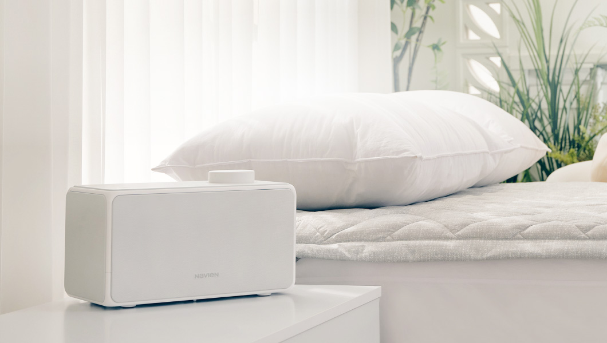
    
    
  </div>
  <!-- 제품 USP 요약 -->
  <div class="prd-main-summary">
    <ul class="summary-list">
      <li>
        <div class="summary-item">
          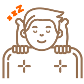
          <div class="text">
            자면서 이불 속이<br>
            더워지지 않는<br>
            <strong class="keyword">기분 좋은 포근함</strong>
          </div>
        </div>
      </li>
      <li>
        <div class="summary-item">
          
          <div class="text">
            기분 좋은 온도로<br>
            좋은 잠을 만드는
            <strong class="keyword">수면 레시피</strong>
          </div>
        </div>
      </li>
      <li>
        <div class="summary-item">
          
          <div class="text">
            UV살균으로 걱정 없고<br>
            물 빼기도 버튼 하나로<br>
            <strong class="keyword">손쉬운 물 관리</strong>
          </div>
        </div>
      </li>
      <li>
        <div class="summary-item">
          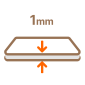
          <div class="text">
            취향에 따라<br>
            매트타입을 선택하는
            <strong class="keyword">슬림/쿠션매트</strong>
          </div>
        </div>
      </li>
    </ul>
  </div>
  <!-- //제품 USP 요약 -->
</div>
<!-- //메인 비주얼 -->

<!-- 골드마크 인증 -->
<div class="prd-goldmark">
  <div class="goldmark-inner">
    <div class="goldmark-header">
      
      <div class="goldmark-title-wrap">
        <h4 class="goldmark-title">업계 최초 굿슬립 골드마크 인증을 받았습니다.</h4>
        <span class="goldmark-badge">제품명 : 나비엔 숙면매트</span>
      </div>
    </div>
    <div class="goldmark-desc-wrap">
      <span class="goldmark-desc-title">*굿슬립마크란?</span>
      <p class="goldmark-desc">
        공인 검증기관의 시험∙평가를 통하여 ‘수면’을 목적으로 사용하기에 적합성을 인증받은<br>
        제품임을 표기하기 위해 사단법인 한국수면산업협회에서 발급하는<br>
        국내 최초이자 유일한 수면제품 적합성 인증마크입니다.
      </p>
      <ul class="goldmarkdesc-organ-list">
        <li class="goldmarkdesc-organ-item">
          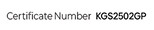
        </li>
        <li class="goldmarkdesc-organ-item">
          
        </li>
        <li class="goldmarkdesc-organ-item">
          
        </li>
      </ul>
    </div>
  </div>
</div>
<!-- //골드마크 인증 -->

<!-- 온도관리 불편함 -->
<div class="prd-tempmanage">
  <h3 class="section-title">
    추운 겨울, 보일러만으로는 아쉬운 온도 관리<br>
    이런 불편함은 없었나요?
  </h3>
  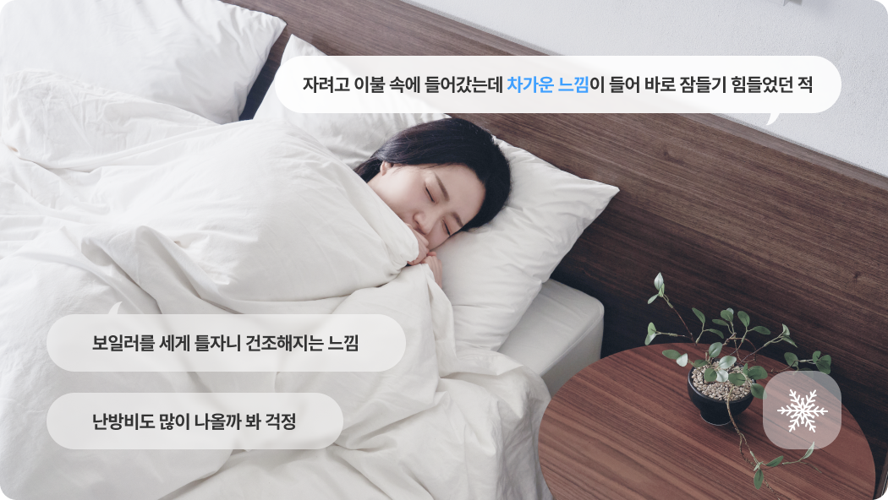
</div>
<!-- //온도관리 불편함 -->

<!-- 수면 습관 -->
<div class="prd-sleephabit">
  <h2 class="title-wrap">
    <span class="prd-desc">실내온도만 조절하던 수면 습관, 이제는 바꿔 보세요</span>
    <strong class="prd-title">
      사람의 체온은 수면 중 수시로 변하기 때문에<br>
      내 몸에 닿는 접촉온도가 중요합니다
    </strong>
    <span class="prd-detail-desc">물이 순환하며 열이 쌓이지 않아 밤새 쾌적하게 숙면을 도와줍니다.</span>
  </h2>
  <div class="bg-img">
    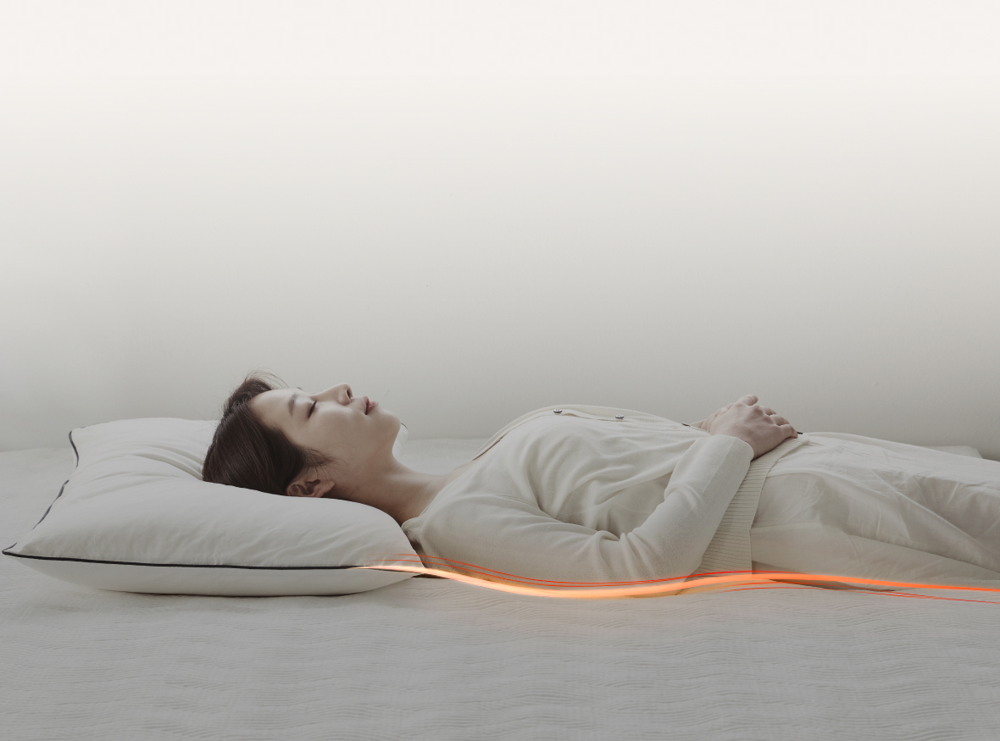
  </div>
</div>
<!-- //수면 습관 -->

<!-- 기분 좋은 포근함 -->
<div class="prd-section-cozy">
  <div class="section-header">
    <h3 class="section-title">실시간으로 유지되는 포근함</h3>
    <span class="title-label">
      원하는 설정온도가 정확하도록, 슬립허브에서 물을 보낼 때와 돌아올 때의<br>
      온도를 각각 체크하고 온도 변화에 따라 스스로 출력을 조절합니다.
    </span>
  </div>
  <div class="temperature-control-information">
    <figure class="point-item">
      <figcaption class="figure-text">
        <strong class="title">설정한 온도를 실시간으로 유지해줘요</strong>
        <p class="description">
          슬립허브에서 나가고 돌아오는 물의 온도를<br>
          측정하는 듀얼온도센싱으로 정확한 온도를 구현합니다.
        </p>
        <p class="description bottom">나의 체온이 더해져도 열이 쌓이지 않습니다.</p>
      </figcaption>
      
      <div class="figure-motion-graph" data-motion-visible="false">
        
        <i class="line"></i>
      </div>
      <div class="figure-motion" data-motion-visible="false">
        <i class="icon icon-mat"><i class="circle"></i></i>
        <i class="icon icon-water-in"><i class="check"></i></i>
        <i class="icon icon-water-out"><i class="check"></i></i>
      </div>
    </figure>
  </div>
</div>
<!-- //기분 좋은 포근함 -->

<!-- 온도의 개인화 -->
<div class="prd-section temperature-control">
  <div class="section-header">
    <h3 class="section-title">온도의 개인화, 숙면의 최적화</h3>
    <span class="title-label">
      서로 다른 온도 취향, 문제 없어요.<br>
      0.5ºC 단위까지 각자에게 알맞은 숙면온도로 설정해서 쾌적한 수면이 가능합니다.
    </span>
  </div>
  <div class="temperature-control-information">
    <div class="point-item">
      <div class="group-motion-temperatureControlTwin">
        <div class="animation-canvas" data-motion-visible="false">
          <div class="layer-temperature">
            <div class="left-temperature">
              <span data-countup data-countup-start="25" data-countup-end="33.5" data-countup-duration="1200" data-countup-suffix="">33.5</span><small>℃</small>
            </div>
            <div class="center-thermometer">
              
              <div class="text-box">
                <p class="t1">온도 범위</p>
                <p class="t2">28 ~ 45<small>℃</small></p>
              </div>
            </div>
            <div class="right-temperature">
              <span data-countup data-countup-start="25" data-countup-end="36.5" data-countup-duration="1200" data-countup-suffix="">36.5</span><small>℃</small>
            </div>
          </div>
          <div class="layer-overlay">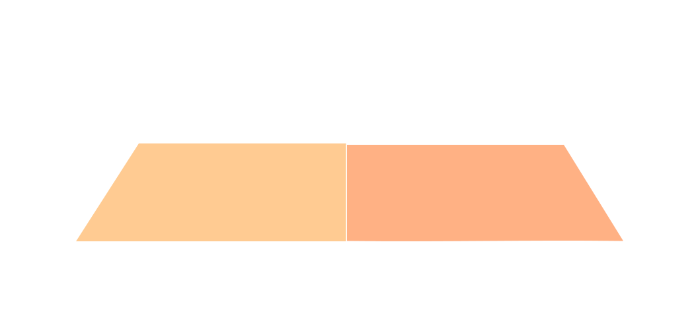</div>
        </div>
      </div>
    </div>
    <span class="temperature-control-desc">* 한 쪽 OFF도 가능합니다.</span>
  </div>
</div>
<!-- //온도의 개인화 -->

<!-- AI 숙면 솔루션 -->
<div class="prd-section-sleep-solution">
  <div class="sleep-solution-information">
    <div class="sleep-solution-content">
      <div class="product-detail-container">
        <div class="group-AIsolutionData">
          <div class="top">
            <span class="sub-title">좋은 잠을 만드는</span>
            <h2 class="title">수면 레시피</h2>
            <p class="main-description">수면에서 ‘숙면’으로! 데이터로 확인해보세요</p>
            <div class="description">깊은 수면 시간을 늘려 푹 잔 느낌을 주고 렘수면 시간을 늘려 머리를 맑게 해줍니다</div>
          </div>
          <div class="mid">
            <div class="tit-lbl">수면 실험결과</div>
            <div class="wrap-charts animation-canvas" data-motion-visible="false">
              <div class="grid-lines">
                <div class="item">
                  <div class="chart">
                    <div class="graph"><span>29분 57초</span></div>
                    <div class="graph anima">
                      <span>39분 57초</span>
                      <strong>33.4% 증가</strong>
                    <div class="arrow"></div>
                    </div>
                  </div>
                  <div class="txt">깊은 수면 시간</div>
                </div>
                <div class="item">
                  <div class="chart">
                    <div class="graph"><span>1시간 <br>6분 52초</span></div>
                    <div class="graph anima">
                      <span>1시간 <br>13분 28초</span>
                      <strong>9.9% 증가</strong>
                      <div class="arrow"></div>
                    </div>
                  </div>
                  <div class="txt">렘수면 시간</div>
                </div>
              </div>
            </div>
            <ul class="wrap-label">
              <li><span></span>미사용</li>
              <li class="active"><span></span>숙면매트 사용</li>
            </ul>
          </div>
          <div class="bot">
            <p class="disc">* 결과는 사용 환경 및 개인에 따라 차이가 있을 수 있습니다.</p>
            <p class="disc">* 효율 및 수치에 대한 자세한 내용은 페이지 맨 하단을 참고해 주세요 <sup class="footnoteLink"><a href="#footnote-1" aria-label="각주 1번">1)</a></sup></p>
          </div>
        </div>
      </div>
    </div>
  </div>
</div>
<!-- //AI 숙면 솔루션 -->

<!-- 손쉬운 물 관리 -->
<div class="prd-section water-management">
  <div class="section-header-order">
    <span class="title-label">물을 알아서 살균해주고, 필요 시 간편하게 뺄 수도 있는</span>
    <h3 class="section-title">손쉬운 물 관리</h3>
  </div>
  <div class="water-management-information">
    <figure class="water-management-clean">
      <figcaption class="figure-text">
        <strong class="figure-title">알아서 깨끗하게 해주니 안심돼요 <sup><a href="#footnote-2" aria-label="각주 2번">2)</a></sup></strong>
        <p class="description">
          UV살균을 통해 보일러 안에서 순환하는 물의<br>
          미생물과 세균을 제거합니다.
        </p>
        <p class="description">
          정수, 생수, 수돗물 관계 없이 알아서 <br>
          깨끗하게 유지합니다.
        </p>
      </figcaption>
      
    </figure>
    <figure class="water-management-change">
      <figcaption class="figure-text">
        <strong class="figure-title">손쉬운 물 빼기로 관리도 편해요</strong>
        <p class="description">
          전용 키트와 버튼 하나로 보일러와 매트 안의 물을<br>
          자동으로 빼주어 교체 및 관리가 편리합니다.
        </p>
        <span class="license">특허 등록번호 (10-1800839)</span>
      </figcaption>
      
    </figure>
  </div>
</div>
<!-- //손쉬운 물 관리 -->

<!-- 매트 타입 -->
<div class="prd-section two-types-mat">
  <div class="section-header-order">
    <span class="title-label">내 취향에 따라 선택하는</span>
    <h3 class="section-title">매트 타입</h3>
  </div>
  <div class="slim-type-information">
    <div class="text-main">
      매트리스 느낌 그대로<br>
      <strong>초슬림매트</strong>
    </div>
    <div class="text-sub">
      매트에 호스가 없어서<br>
      있는 듯 없는 듯 배김이 없습니다.
    </div>
    <figure class="slim-type-figure bg-figure">
      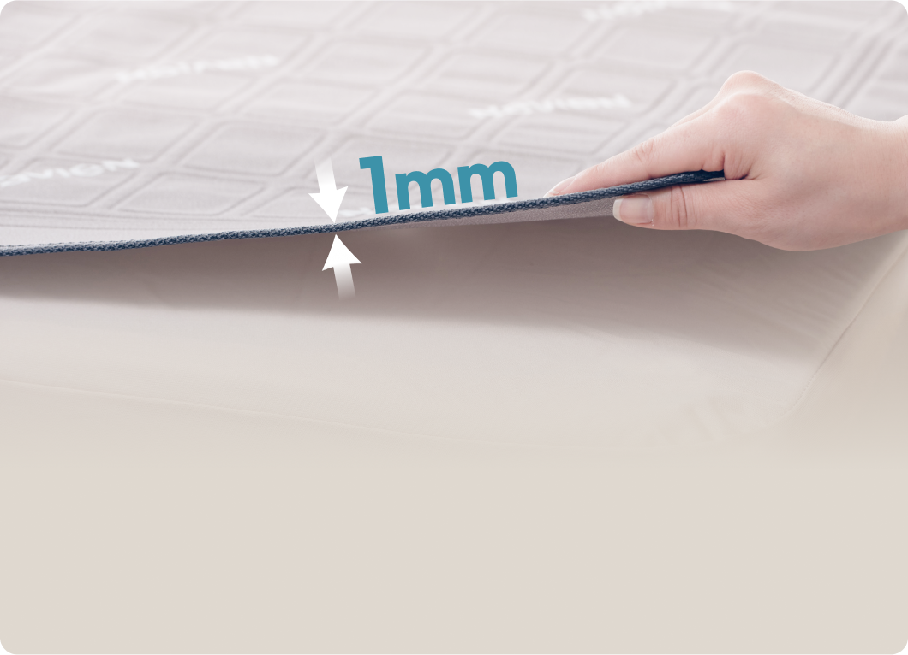
    </figure>
    <ul class="slim-type-point">
      <li>
        <figure class="point-item">
          <figcaption class="title">
            촘촘하게 설계된 물길이<br>
            매트 전체에 온도를 고르게 전달합니다.
          </figcaption>
          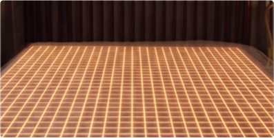
        </figure>
      </li>
      <li>
        <figure class="point-item">
          <figcaption class="title">
            사용하지 않을 때는 쉽게 접어<br>
            편리하게 보관할 수 있습니다.
          </figcaption>
          
        </figure>
      </li>
    </ul>
  </div>
  <div class="cushion-type-information">
    <div class="text-main">
      어디서든 푹신한<br>
      <strong>쿠션매트</strong>
    </div>
    <div class="text-sub">
      침대 뿐 아니라 바닥 사용도 문제 없습니다.
    </div>
    <figure class="cushion-type-figure bg-figure">
      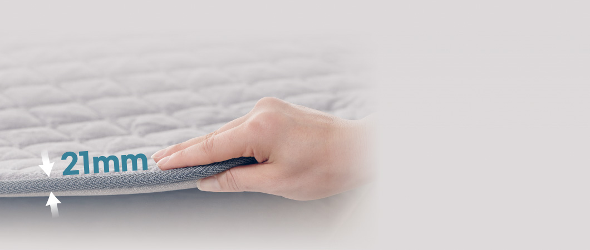
    </figure>
    <ul class="cushion-type-point">
      <li>
        <figure class="point-item">
          <figcaption class="title">세심하게 설계한 레이어로<br>배기지 않고 안락합니다.</figcaption>
          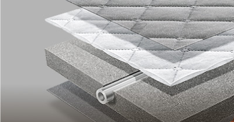
        </figure>
      </li>
    </ul>
  </div>
  <ul class="text-notice">
    <li>해당 제품은 슬림/쿠션 두 가지 매트타입 중 한 가지 선택이 가능합니다.</li>
  </ul>
</div>
<!--// 매트 타입 -->

<!-- 온수 전용 커버 -->
<div class="prd-section water-mat-cover">
  <div class="section-header-order">
    <span class="title-label">쾌적한 수면환경을 위한</span>
    <h3 class="section-title">숙면매트 온수 전용 커버</h3>
  </div>
  <div class="water-cover-information">
    <div class="cover-point-main">
      <div class="allergy-care-content-wrap">
        <strong class="title">알러지케어 원단</strong>
        <p class="description">
          진드기와 먼지를 차단하면서도<br>
          통기성이 좋아 관리가 편합니다.
        </p>
        <div class="anti-mite-wrap">
          <span class="license">
            공인인증기관 항진드기 검사 완료<br>
            (FITI시험연구원, N288-23-00040)
          </span>
          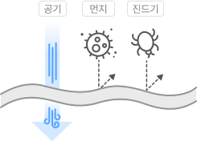
        </div>
        <p class="text-point">
          닿는 곳마다 깨끗한 촉감이 기분 좋은 수면을 만듭니다.
        </p>
      </div>
      <figure class="cover-figure">
        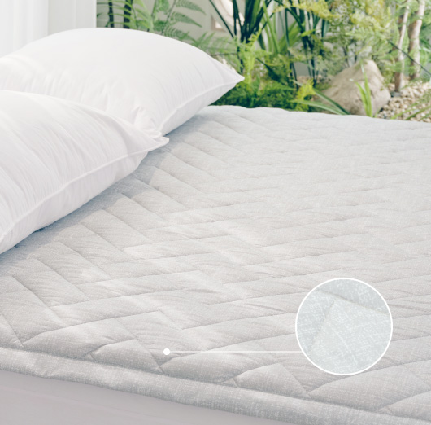
        <figcaption class="text-option">애쉬그레이 색상</figcaption>
      </figure>
    </div>
    <ul class="cover-point-list">
      <li>
        <figure class="point-item">
          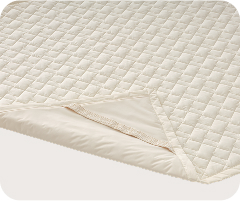
          <figcaption class="title">
            <span class="label">뒤척여도 움직이지 않는</span>
            고정 밴드
          </figcaption>
        </figure>
      </li>
      <li>
        <figure class="point-item">
          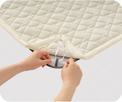
          <figcaption class="title">
            <span class="label">매트와 커버를 고정하는</span>
            스냅 단추
          </figcaption>
        </figure>
      </li>
      <li>
        <figure class="point-item">
          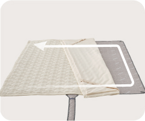
          <figcaption class="title">
            <span class="label">설치와 관리가 편한</span>
            3면 오픈형
          </figcaption>
        </figure>
      </li>
      <li>
        <figure class="point-item">
          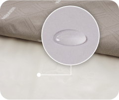
          <figcaption class="title">
            <span class="label">더욱 안심할 수 있는</span>
            방수 소재
          </figcaption>
        </figure>
      </li>
    </ul>
  </div>
</div>
<!--// 온수 전용 커버 -->

<!-- 다중 안전 시스템 -->
<div class="prd-section safe-system">
  <div class="section-header-order">
    <span class="title-label">안심하고 사용할 수 있는</span>
    <h3 class="section-title">다중 안전 시스템</h3>
    <p class="section-description">빈틈없이 설계한 15가지 안전 장치로 걱정 없습니다</p>
  </div>
  <div class="safe-system-information">
    <ul class="safe-system-list">
      <li>
        <i class="icon high-temperature"></i>
        <span class="name">고온모드 알림기능</span>
      </li>
      <li>
        <i class="icon auto-timer"></i>
        <span class="name">자동정지타이머</span>
      </li>
      <li>
        <i class="icon self-diagnosis"></i>
        <span class="name">자가진단기능</span>
      </li>
      <li>
        <i class="icon lock-mode"></i>
        <span class="name">잠금모드</span>
      </li>
      <li>
        <i class="icon water-leak-alarm"></i>
        <span class="name">누수알림</span>
      </li>
      <li>
        <i class="icon overheating-prevention"></i>
        <span class="name">과열방지 시스템</span>
      </li>
      <li>
        <i class="icon water-level-sensor"></i>
        <span class="name">수위센서</span>
      </li>
      <li>
        <i class="icon connect-guard"></i>
        <span class="name">커넥트 가드</span>
      </li>
      <li>
        <i class="icon heater-malfunction-prevention"></i>
        <span class="name">히터오작동방지</span>
      </li>
      <li>
        <i class="icon freeze-prevention"></i>
        <span class="name">동파방지시스템</span>
      </li>
      <li>
        <i class="icon safe-fuse"></i>
        <span class="name">안전퓨즈</span>
      </li>
      <li>
        <i class="icon movement-sensor"></i>
        <span class="name">동작센서</span>
      </li>
      <li>
        <i class="icon temperature-sensor"></i>
        <span class="name">온도센서</span>
      </li>
      <li>
        <i class="icon fire-prevention"></i>
        <span class="name">화재방지</span>
      </li>
      <li>
        <i class="icon horizontality-sensor"></i>
        <span class="name">수평유지센서</span>
      </li>
    </ul>
  </div>
</div>
<!-- //다중 안전 시스템 -->

<!-- 나비엔 서비스 -->
<div class="info-section navien-service">
  <div class="section-header">
    <span class="title-label">100만 고객이 나비엔을 선택한 이유</span>
    <h3 class="section-title">고객 감동 서비스</h3>
  </div>
  <div class="navien-service-information">
    <span class="warranty"></span>
    <div class="text">
      <span class="text-1">더 이상 불량 및 고장에 대한 걱정은 NO!</span>
      <strong class="text-2">
        365일 24시간 언제나<br>
        처음부터 끝까지 고객님과 함께 합니다.
      </strong>
      <span class="text-3">고객센터 1588 - 1144</span>
    </div>
  </div>
</div>
<!-- //나비엔 서비스 -->

 <!-- 수상 및 인증 -->
<div class="info-section product-awards">
  <div class="section-header">
    <h3 class="section-title">수상 및 인증</h3>
  </div>
  <ul class="product-award-list">
    <li>
      <div class="award-item">
        
        <div class="award-text-wrap">
          <div class="text-main title">
            소비자중심경영수상 7회 연속 인증
          </div>
          <div class="text-sub year">
            2011 ~ 2024
          </div>
        </div>
      </div>
    </li>
    <li>
      <div class="award-item">
        
        <div class="award-text-wrap">
          <div class="text-main title">
            프리미엄브랜드지수 10년 연속 1위
          </div>
          <div class="text-sub year">
            2016 ~ 2025
          </div>
        </div>
      </div>
    </li>
    <li>
      <div class="award-item">
        
        <div class="award-text-wrap">
          <div class="text-main title">
            한국품질만족지수 9년 연속 1위
          </div>
          <div class="text-sub year">
            2016 ~ 2025
          </div>
        </div>
      </div>
    </li>
    <li>
      <div class="award-item">
        
        <div class="award-text-wrap">
          <div class="text-main notice">
            본 제품은 전자기장환경인증(EMF)를 획득해<br>
            전자파로부터의 안전성을 검증받았습니다.
          </div>
          <div class="text-sub source">
            한국기계전자시험연구원
          </div>
        </div>
      </div>
    </li>
    <li>
      <div class="award-item">
        
        <div class="award-text-wrap">
          <div class="text-main notice">
            IDEA 디자인 어워드 본상 수상
          </div>
          <div class="text-sub source">
            2025
          </div>
        </div>
      </div>
    </li>
    <li>
      <div class="award-item">
        
        <div class="award-text-wrap">
          <div class="text-main notice">
            굿디자인 어워드 본상 수상
          </div>
          <div class="text-sub year">
            산업통상지원부 / 2024
          </div>
        </div>
      </div>
    </li>
  </ul>
</div>
<!-- //수상 및 인증 -->

<!-- 제품 스펙 -->
<div class="info-section product-spec">
  <div class="section-header">
    <h3 class="section-title">제품 스펙</h3>
  </div>
  <div class="spec-size">
    <h4 class="spec-title">제품 사이즈</h4>
    <ul class="size-list">
      <li>
        <strong class="type-name boiler">슬립허브(본체)</strong>
        
      </li>
      <li>
        <strong class="type-name mat">매트</strong>
        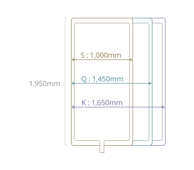
      </li>
      <li>
        <strong class="type-name cover">커버</strong>
        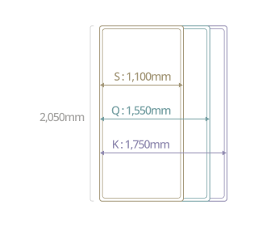
      </li>
    </ul>
  </div>
  <div class="spec-detail">
    <h4 class="spec-title">제품 상세 스펙</h4>
    <table class="spec-detail-table">
      <caption>제품 상세 스펙 정보가 나와 있는 표</caption>
      <colgroup>
        <col>
        <col width="260px">
        <col width="260px">
        <col width="230px">
      </colgroup>
      <tbody>
        <tr>
          <th scope="row">제품명</th>
          <td colspan="3"><strong class="name">숙면매트 온수 EMW720</strong></td>
        </tr>
        <tr>
          <th scope="row">매트타입</th>
          <td colspan="3"><strong class="type">슬림</strong></td>
        </tr>
        <tr>
        </tr><tr>
          <th scope="row">사이즈 구분</th>
          <td>싱글</td>
          <td>퀸</td>
          <td>킹</td>
        </tr>
        <tr>
          <th scope="row">모델명</th>
          <td>EMW720-SS</td>
          <td>EMW720-QS</td>
          <td>EMW720-KS</td>
        </tr>
        <tr>
          <th scope="row">매트 사이즈 <small>(가로 x 세로, mm)</small></th>
          <td>1000 x 1950</td>
          <td>1450 x 1950</td>
          <td>1650 x 1950</td>
        </tr>
        <tr>
          <th scope="row">커버 사이즈 <small>(가로 x 세로, mm)</small></th>
          <td>1100 x 2050</td>
          <td>1550 x 2050</td>
          <td>1750 x 2050</td>
        </tr>
        <tr>
          <th scope="row">슬립허브 사이즈 <small>(가로 x 세로 x 높이, mm)</small></th>
          <td colspan="3">284 x 151 x 158 (캡포함 176)</td>
        </tr>
        <tr>
          <th scope="row">슬립허브 무게 <small>(kg)</small></th>
          <td colspan="3">2.65</td>
        </tr>
        <tr>
          <th scope="row">설정온도 범위</th>
          <td colspan="3">28 ~ 45ºC</td>
        </tr>
        <tr>
          <th scope="row">슬립허브 색상</th>
          <td colspan="3">라이트베이지 / 베이지</td>
        </tr>
        <tr>
          <th scope="row">매트커버 색상</th>
          <td colspan="3">애쉬베이지</td>
        </tr>
        <tr>
          <th scope="row">물탱크 용량 <small>(mL)</small></th>
          <td colspan="3">700</td>
        </tr>
        <tr>
          <th scope="row">정격전압 / 정격소비전력</th>
          <td colspan="3">AC 220V, 60Hz / 350W</td>
        </tr>
        <tr>
          <th scope="row">구동 방식</th>
          <td colspan="3">모터 순환 방식 (BLDC 모터 적용)</td>
        </tr>
        <tr>
          <th scope="row">품질 보증 기준</th>
          <td colspan="3">3년 무상 품질 보증</td>
        </tr>
        <tr>
          <th scope="row">
            
            KC 인증 필 유무
          </th>
          <td colspan="3">
            전기용품 안전인증 <span class="product-number">YH07111-20001</span><br>
            전자파 적합필증 <span class="product-number">R-R-kdn-EMW720-KS</span><br>
            (RF모듈) <span class="product-number">R-C-es5-ESP32WROOM32E</span>
          </td>
        </tr>
        <tr>
          <th scope="row">AS책임자와 전화번호</th>
          <td colspan="3">경동나비엔 서비스센터 / 1588 - 1144</td>
        </tr>
        <tr>
          <th scope="row">동일모델의 출시년월</th>
          <td colspan="3">2024년 9월</td>
        </tr>
        <tr>
          <th scope="row">제조자 / 제조국</th>
          <td colspan="3">주식회사 경동나비엔 / 대한민국</td>
        </tr>
      </tbody>
    </table>

    <ul class="text-notice">
      <li>* 매트/커버 사이즈는 제품마다 차이가 있을 수 있습니다. (제품 사이즈 ± 30mm)</li>
      <li>* 매트/커버 색상은 제품마다 차이가 있을 수 있습니다.</li>
      <li>* 보일러 사이즈는 제품마다 차이가 있을 수 있습니다.</li>
    </ul>
  </div>
</div>
<!-- //제품 스펙 -->
 
<!-- 공통 -->
<div class="info-section common">
  <!-- 안내사항 -->
  <div class="common-notice">
    <h4 class="title">공통 안내사항</h4>
    <ul class="text-notice">
      <li>* 위의 이미지는 소비자의 이해를 돕기위해 연출된 이미지이며 광고적 표현이 포함되어 실제 제품과 차이가 있을 수 있습니다.</li>
      <li>* 제품 외관, 스펙 등은 사전 예고 없이 변경될 수 있습니다.</li>
      <li>* 제품 색상은 모니터 해상도, 밝기 설정 등 컴퓨터 사양에 따라 실제 제품과 차이가 날 수 있습니다.</li>
      <li>* 해당 제품의 성능은 실 사용 환경에 따라 다를 수 있습니다.</li>
    </ul>
  </div>
  <!-- //안내사항 -->

  <!-- 각주 -->
  <div class="footnote">
    <ul class="footnote-list unfolded">
      <li class="footnote-item">
        <span class="footnote-anchor" id="footnote-1"></span>
        <span class="index-num">1)</span>
        <dl class="item-detail">
          <dt class="colon">연구과제</dt>
          <dd>수면 단계에 따른 적절한 매트 온도 제공이 수면 품질에 미치는 영향</dd>
          <dt class="colon">지원 기관</dt>
          <dd>경동나비엔</dd>
          <dt class="colon">의뢰기관</dt>
          <dd>에이슬립</dd>
          <dt class="colon">실시기관</dt>
          <dd>클리오닉 의원</dd>
          <dt class="colon">연구 기간</dt>
          <dd>2023.12~2024.06</dd>
          <dt class="colon">대상자</dt>
          <dd>수면장애가 없는 20~50대 건강한 남녀 50명</dd>
          <dt class="colon">실험 방법</dt>
          <dd>숙면매트 온수(EQM595) / 카본(EME520)의 사용 조건에 따라 그룹을 나누어 수면다원검사 진행</dd>
          <dt class="colon">실험 조건</dt>
          <dd class="sub-list">
            <ul>
              <li>- 총 3번에 걸쳐 정해진 취침시간 내 개별 패턴대로 수면 및 기상하였음</li>
              <li>- 숙면매트 설정 온도: 33℃ / 실내온도: 18~20℃ / 실내습도: 50-55%</li>
              <li>- SIQ(수면관성)와 같은 주관적 설문조사를 진행하였음</li>
            </ul>
          </dd>
          <dt class="colon">실험 결과</dt>
          <dd class="sub-list">
            <ul>
              <li>- 수면효율, 총 수면시간, 깊은 수면 시간, 렘수면 시간에서 통계적으로 유의미한 개선효과를 보인 것을 확인하였습니다.</li>
            </ul>
          </dd>
        </dl>
      </li>
      <li class="footnote-item">
        <span class="footnote-anchor" id="footnote-2"></span>
        <span class="index-num">2)</span>
        <dl class="item-detail">
          <dt class="colon">연구과제</dt>
          <dd>보일러를 연계한 온수매트의 저에너지 쾌적 환경 성능 및 수면 효율 개선 연구 및 별첨</dd>
          <dt class="colon">지원 기관</dt>
          <dd>경동나비엔</dd>
          <dt class="colon">수행기관</dt>
          <dd>단국대학교</dd>
          <dt class="colon">대상자</dt>
          <dd>수면장애가 없는 남녀 20명</dd>
          <dt class="colon">실험 방법</dt>
          <dd>온수매트의 사용 조건에 따라 Case를 나누어 에너지 사용량 및 수면 효율 측정</dd>
          <dt class="colon">실험 조건</dt>
          <dd class="sub-list">
            <ul>
              <li>- 보일러, 온수매트의 On/Off 및 설정 온도에 따라 8개의 Case 구성</li>
              <li>- 보일러 21℃, 23℃, off / 매트 30℃, 35℃, 40℃, off</li>
            </ul>
          </dd>
          <dt>실험 자재</dt>
          <dd class="sub-list">
            <ul>
              <li>- 실내 환경 조성용 실험 자재 : 보일러(NCB750 18K), 온수매트(숙면매트 온수 EQM531-SS)</li>
              <li>- 에너지 사용량 측정용 실험 자재 : 대명 가정용 가스 계량기 G1.6, Gems 3512</li>
              <li>- 수면 효율 측정용 실험 자재 : Actigraph wGT3X-BT, LT-8A 등</li>
              <li>- 실내 온/습도 측정용 실험 자재 : SK-L200THII α, T type Thermocouple</li>
            </ul>
          </dd>
          <dt class="colon">실험 장소</dt>
          <dd>단국대학교 종합 실험동에 위치한 실험용 챔버 Smart Living Testbed(SLT)</dd>
          <dt class="colon">실험 결과</dt>
          <dd>
            보일러 단독으로 실내온도를 23℃로 맞춘 경우 대비, 보일러로 실내온도를 21℃로 맞추고 매트온도를 35℃로 사용한 경우,<br>
            난방 에너지는 약 21% 절감되고, 수면의 질은 약 7% 상승하였습니다.
          </dd>
        </dl>
      </li>
      <li class="footnote-item">
        <span class="footnote-anchor" id="footnote-3"></span>
        <span class="index-num">3)</span>
        <dl class="item-detail">
          <dt class="colon">시험 기관</dt>
          <dd>한국화학융합시험연구원(KTR)</dd>
          <dt class="colon">시험 방법</dt>
          <dd class="sub-list">
            <ul>
              <li>- 초기 세균수가 (1.0-9.9) X 10^4 CFU/ mL이 되도록 오염수를 준비</li>
              <li>- 오염수 (0.7~ 0.8) L를 온수매트에 주입하여 6시간 가동 후 생균 수 측정</li>
              <li>- 4종류 시험진행 (28°C 대장균/ 포도상구균) (45°C 대장균/ 포도상구균)</li>
            </ul>
          </dd>
          <dt>결과</dt>
          <dd class="sub-list">
            <ul>
              <li>- 28°C 온도 설정 대장균: 대조군 5.1 X 10^4 CFU/ mL에서 시험군 ＜10 CFU/mL로 관찰됨. 포도상구균: 대조군 6.4 X 10^4 CFU/ mL에서 시험군 ＜10 CFU/mL로 관찰됨.</li>
              <li>- 45°C 온도 설정 대장균: 대조군 5.8 X 10^4 CFU/ mL에서 시험군 ＜10 CFU/mL로 관찰됨. 포도상구균: 대조군 5.6 X 10^4 CFU/ mL에서 시험군 ＜10 CFU/mL로 관찰됨.</li>      
            </ul>
          </dd>
          <dt class="colon">결론</dt>
          <dd>4종류 시험 모두 대조 군(초기)대비 99.9% 이상 살균됨을 확인.</dd>
        </dl>
      </li>
    </ul>
    <span class="footnote-desc">* 실험실 측정 수치로 실생활 조건에서는 달라질 수 있음.</span>
  </div>
  <!-- //각주 -->
</div>
<!-- //공통 -->

</article>